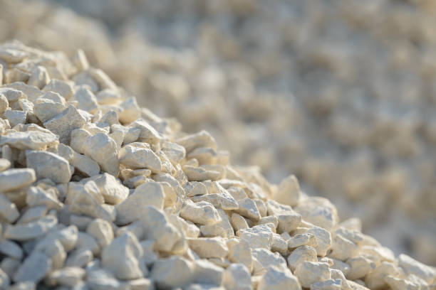

Rocha sedimentar macia, utilizada em fachadas, pisos e construções históricas, como o Coliseu; também oferece isolamento térmico.
Rocha ígnea densa, de baixa porosidade, adequada para pavimentação, paredes e lastro de estradas.
Rocha sedimentar macia, utilizada em fachadas, pisos e construções históricas, como o Coliseu; também oferece isolamento térmico.
